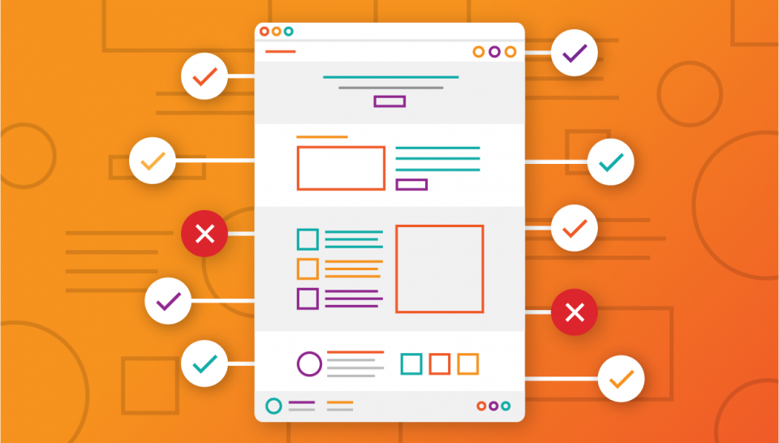

Tilgængelighed på Nettet
Billede: (juiceboxinteractive, 2018)
Problemer med tilgængelighed
Når vi taler om tilgængelighed, på en hjemmeside, betyder det at indholdet og funktionaliteten på siden er tilgængelige for alle der bruger siden. Uanset hvem der bruger den. Som udvikler af en hjemmeside, er det nemt antage at alle bruger kan se og bruge et tastatur, mus eller touch screen og på samme måde interagere med sidens indhold som du gør. Dette gør at oplevelsen virker godt for nogle, mens det skaber små irritationer og problemer for andre. (Kearney et al., 2019) Tilgængelighed henvender sig, derfor til de bruger som er uden for rækkevidde, af ”normale bruger” som må bruge og interagere med ting anderledes end dig. Det henvender sig, især til dem der har et handicap på den ene eller anden måde.
Regler på området
Der findes ikke nogen generelle regler, man skal overholde. Men arbejder man i det offentlige, gælder loven om tilgængelighed af offentlige og offentligretlige organers websteder og mobilapplikationer. Loven dækker over de standarder den internationale organisation W3C har udarbejdet kaldet WCAG (Web Content Accessibility Guidelines). (Digitaliseringsstyrelsen, 2019)
Hjælpemidler på hjemmesider
Mennesker med handicap, er lige så forskellige som folk uden handicap og det er deres handicap også. (MDN Web docs, 2019) Mennesker med synshandicap, blinde eller farveblinde bruger skærmforstørrelsesglas. Enden fysiske eller software til at hjælpe dem med at kunne se skærmen. Andre bruger skræm oplæsere til at læse teksten højt. Folk med dårlig hørelse eller døve bruger ”Assistive Devices”, enheder der hjælper dem med at høre eller kommunikere. Bevægelseshæmmede som enden har mistet læmmer eller er neurologisk hæmmede, og har mistet kontrollen over deres krop, kan måske have svært ved at bruge en mus. Mens andre kan være hårdere ramt. Måske er man lammet så meget, at man er nødt til at bruge en hovedpeger. (MDN Web docs, 2019)Det gør typisk at man kun kan bruge tastaturet til at manøvrere websitet.
Brugervenlig som ARIA
Webbrowsere bruger tilgængeligheds API’s, givet af operativsystemet, der giver informationer til ”assistive technologies” (ATs). ATs bruger mest de semantiske tags, som fortæller hvilke slags informationer der er på siden. Disse informationer er struktureret i et informationstræ kaldet accessibility tree, tilgængelighedstræet. Som den handicappet kan bruge til at navigere websitet. Nogle gange er de semantiske tags ikke tilstrækkelige, så kan man supplere med WAI-ARIA specifikationer, som tilføjer yderligere information til tilgængelighedstræet.
Kilder
Digitaliseringsstyrelsen, 2019. Lov om webtilgængelighed. [online] digst, Lov om webtilgængelighed.
Available at:
https://digst.dk/digital-service/ webtilgaengelighed/lov-om-webtilgaengelighed/
[Accessed 20 Oct. 2019].
juiceboxinteractive, 2018. Website accessibility checklist: 11 essential things you need to do.
[online] Juicebox Interactive. Available at:
https://juiceboxinteractive.com/ blog/accessibility-checklist/
[Accessed 28 Oct. 2019].
Kearney, M., Gash, D., Boxhall, A. and Dodson, Rob, 2019. Accessibility | Web Fundamentals. [online]
Google Developers. Available at:
https://developers.google.com/ web/fundamentals/accessibility
[Accessed 20 Oct. 2019].
MDN Web docs, 2019. What is accessibility? [online] developer.mozilla, What is accessibility?
Available at:
https://developer.mozilla.org/ en-US/docs/Learn/Accessibility /What_is_accessibility
[Accessed 20 Oct. 2019].